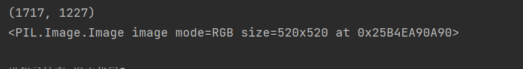

pytorch学习2
Pytorch学习2
常见的transformer

下面我们通过Run Demo的方式来实现记忆常见的transformer！
这是我们要处理的图片：
PIL-Image库读入图片
下面通过PIL的Image库来读取图片文件：
from PIL import Image
img = Image.open("1.png");
print(img);<PIL.PngImagePlugin.PngImageFile image mode=RGBA size=1717x1227 at 0x21AEC1CB880> 这是我们得到的！导入成功！
小插曲： __call__的用法
在Python类里存在内置函数__call__，我们这样的使用它：我们选择新建一个Python文件，
class Person:
def __call__(self, name):
print("__call__ calls for:"+ "hello"+"name")
def hello(self,name):
print("hello"+"name");
person = Person()
person.hello("李四")
person("张三")
书写上面的代码

有点像C++的内置构建函数的感觉，只需要类对象（）后传对应参数就好了。
继续：
看看这个Compose类：
class Compose:
"""Composes several transforms together. This transform does not support torchscript.
Please, see the note below.
Args:
transforms (list of ``Transform`` objects): list of transforms to compose.
Example:
>>> transforms.Compose([
>>> transforms.CenterCrop(10),
>>> transforms.PILToTensor(),
>>> transforms.ConvertImageDtype(torch.float),
>>> ])
.. note::
In order to script the transformations, please use ``torch.nn.Sequential`` as below.
>>> transforms = torch.nn.Sequential(
>>> transforms.CenterCrop(10),
>>> transforms.Normalize((0.485, 0.456, 0.406), (0.229, 0.224, 0.225)),
>>> )
>>> scripted_transforms = torch.jit.script(transforms)
Make sure to use only scriptable transformations, i.e. that work with ``torch.Tensor``, does not require
`lambda` functions or ``PIL.Image``.
"""
def __init__(self, transforms):
if not torch.jit.is_scripting() and not torch.jit.is_tracing():
_log_api_usage_once(self)
self.transforms = transforms
def __call__(self, img):
for t in self.transforms:
img = t(img)
return img
def __repr__(self) -> str:
format_string = self.__class__.__name__ + "("
for t in self.transforms:
format_string += "\n"
format_string += f" {t}"
format_string += "\n)"
return format_string
class ToTensor:
"""Convert a PIL Image or ndarray to tensor and scale the values accordingly.
This transform does not support torchscript.
Converts a PIL Image or numpy.ndarray (H x W x C) in the range
[0, 255] to a torch.FloatTensor of shape (C x H x W) in the range [0.0, 1.0]
if the PIL Image belongs to one of the modes (L, LA, P, I, F, RGB, YCbCr, RGBA, CMYK, 1)
or if the numpy.ndarray has dtype = np.uint8
In the other cases, tensors are returned without scaling.
.. note::
Because the input image is scaled to [0.0, 1.0], this transformation should not be used when
transforming target image masks. See the `references`_ for implementing the transforms for image masks.
.. _references: https://github.com/pytorch/vision/tree/main/references/segmentation
"""
def __init__(self) -> None:
_log_api_usage_once(self)
def __call__(self, pic):
"""
Args:
pic (PIL Image or numpy.ndarray): Image to be converted to tensor.
Returns:
Tensor: Converted image.
"""
return F.to_tensor(pic)
def __repr__(self) -> str:
return f"{self.__class__.__name__}()"
先看后面的ToTensor这个类，其负责把一些PIL Image数据转换为Tensor数据类型，举个例子，就处理我刚刚说的那张图片！
from PIL import Image
from torchvision import transforms
from torch.utils.tensorboard import SummaryWriter
writer = SummaryWriter("logs")
img = Image.open("1.png")
trans = transforms.ToTensor()
img_tensor = trans(img)
writer.add_image("ToTensor",img_tensor)
writer.close()To PILImage
class ToPILImage:
"""Convert a tensor or an ndarray to PIL Image - this does not scale values.
This transform does not support torchscript.
Converts a torch.*Tensor of shape C x H x W or a numpy ndarray of shape
H x W x C to a PIL Image while preserving the value range.
Args:
mode (`PIL.Image mode`_): color space and pixel depth of input data (optional).
If ``mode`` is ``None`` (default) there are some assumptions made about the input data:
- If the input has 4 channels, the ``mode`` is assumed to be ``RGBA``.
- If the input has 3 channels, the ``mode`` is assumed to be ``RGB``.
- If the input has 2 channels, the ``mode`` is assumed to be ``LA``.
- If the input has 1 channel, the ``mode`` is determined by the data type (i.e ``int``, ``float``,
``short``).
.. _PIL.Image mode: https://pillow.readthedocs.io/en/latest/handbook/concepts.html#concept-modes
"""
def __init__(self, mode=None):
_log_api_usage_once(self)
self.mode = mode
def __call__(self, pic):
"""
Args:
pic (Tensor or numpy.ndarray): Image to be converted to PIL Image.
Returns:
PIL Image: Image converted to PIL Image.
"""
return F.to_pil_image(pic, self.mode)
def __repr__(self) -> str:
format_string = self.__class__.__name__ + "("
if self.mode is not None:
format_string += f"mode={self.mode}"
format_string += ")"
return format_string 把其他数据转换成PIL数据类型，不多讲，当成接口就好！
Normalize方法类
class Normalize(torch.nn.Module):
"""Normalize a tensor image with mean and standard deviation.
This transform does not support PIL Image.
Given mean: ``(mean[1],...,mean[n])`` and std: ``(std[1],..,std[n])`` for ``n``
channels, this transform will normalize each channel of the input
``torch.*Tensor`` i.e.,
``output[channel] = (input[channel] - mean[channel]) / std[channel]``
.. note::
This transform acts out of place, i.e., it does not mutate the input tensor.
Args:
mean (sequence): Sequence of means for each channel.
std (sequence): Sequence of standard deviations for each channel.
inplace(bool,optional): Bool to make this operation in-place.
"""
def __init__(self, mean, std, inplace=False):
super().__init__()
_log_api_usage_once(self)
self.mean = mean
self.std = std
self.inplace = inplace
def forward(self, tensor: Tensor) -> Tensor:
"""
Args:
tensor (Tensor): Tensor image to be normalized.
Returns:
Tensor: Normalized Tensor image.
"""
return F.normalize(tensor, self.mean, self.std, self.inplace)
def __repr__(self) -> str:
return f"{self.__class__.__name__}(mean={self.mean}, std={self.std})"
说白了这个就是标准化过程！重要的是这个公式
output[channel] = (input[channel] - mean[channel]) / std[channel]Resize
class Resize(torch.nn.Module):
"""Resize the input image to the given size.
If the image is torch Tensor, it is expected
to have [..., H, W] shape, where ... means an arbitrary number of leading dimensions
.. warning::
The output image might be different depending on its type: when downsampling, the interpolation of PIL images
and tensors is slightly different, because PIL applies antialiasing. This may lead to significant differences
in the performance of a network. Therefore, it is preferable to train and serve a model with the same input
types. See also below the ``antialias`` parameter, which can help making the output of PIL images and tensors
closer.
Args:
size (sequence or int): Desired output size. If size is a sequence like
(h, w), output size will be matched to this. If size is an int,
smaller edge of the image will be matched to this number.
i.e, if height > width, then image will be rescaled to
(size * height / width, size).
.. note::
In torchscript mode size as single int is not supported, use a sequence of length 1: ``[size, ]``.
interpolation (InterpolationMode): Desired interpolation enum defined by
:class:`torchvision.transforms.InterpolationMode`. Default is ``InterpolationMode.BILINEAR``.
If input is Tensor, only ``InterpolationMode.NEAREST``, ``InterpolationMode.NEAREST_EXACT``,
``InterpolationMode.BILINEAR`` and ``InterpolationMode.BICUBIC`` are supported.
The corresponding Pillow integer constants, e.g. ``PIL.Image.BILINEAR`` are accepted as well.
max_size (int, optional): The maximum allowed for the longer edge of
the resized image: if the longer edge of the image is greater
than ``max_size`` after being resized according to ``size``, then
the image is resized again so that the longer edge is equal to
``max_size``. As a result, ``size`` might be overruled, i.e. the
smaller edge may be shorter than ``size``. This is only supported
if ``size`` is an int (or a sequence of length 1 in torchscript
mode).
antialias (bool, optional): Whether to apply antialiasing.
It only affects **tensors** with bilinear or bicubic modes and it is
ignored otherwise: on PIL images, antialiasing is always applied on
bilinear or bicubic modes; on other modes (for PIL images and
tensors), antialiasing makes no sense and this parameter is ignored.
Possible values are:
- ``True``: will apply antialiasing for bilinear or bicubic modes.
Other mode aren't affected. This is probably what you want to use.
- ``False``: will not apply antialiasing for tensors on any mode. PIL
images are still antialiased on bilinear or bicubic modes, because
PIL doesn't support no antialias.
- ``None``: equivalent to ``False`` for tensors and ``True`` for
PIL images. This value exists for legacy reasons and you probably
don't want to use it unless you really know what you are doing.
The current default is ``None`` **but will change to** ``True`` **in
v0.17** for the PIL and Tensor backends to be consistent.
"""
def __init__(self, size, interpolation=InterpolationMode.BILINEAR, max_size=None, antialias="warn"):
super().__init__()
_log_api_usage_once(self)
if not isinstance(size, (int, Sequence)):
raise TypeError(f"Size should be int or sequence. Got {type(size)}")
if isinstance(size, Sequence) and len(size) not in (1, 2):
raise ValueError("If size is a sequence, it should have 1 or 2 values")
self.size = size
self.max_size = max_size
if isinstance(interpolation, int):
interpolation = _interpolation_modes_from_int(interpolation)
self.interpolation = interpolation
self.antialias = antialias
def forward(self, img):
"""
Args:
img (PIL Image or Tensor): Image to be scaled.
Returns:
PIL Image or Tensor: Rescaled image.
"""
return F.resize(img, self.size, self.interpolation, self.max_size, self.antialias)
def __repr__(self) -> str:
detail = f"(size={self.size}, interpolation={self.interpolation.value}, max_size={self.max_size}, antialias={self.antialias})"
return f"{self.__class__.__name__}{detail}"print(img.size)
trans_size = transforms.Resize((520,520))
imgResize = trans_size(img)
print(imgResize) 这样就好了！

Compose 组合变换
trans_resize_2 = transforms.Resize(512)
trans_compose = transforms.Compose([trans_resize_2, trans])
img_resize_2 = trans_compose(img)
writer.add_image("Composer111", img_resize_2,2)
writer.close() 我们这样把若干变换组合在一起一并完成！
全体目光向我看齐，我宣布个事！是我Charliechen写的这篇文章！(?)